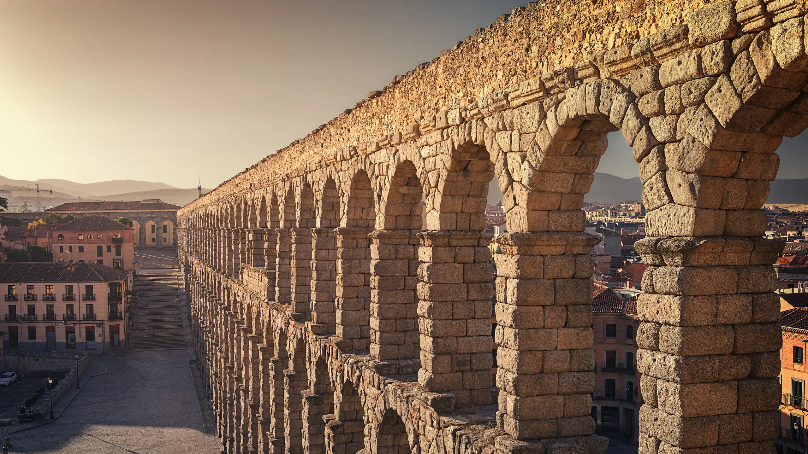
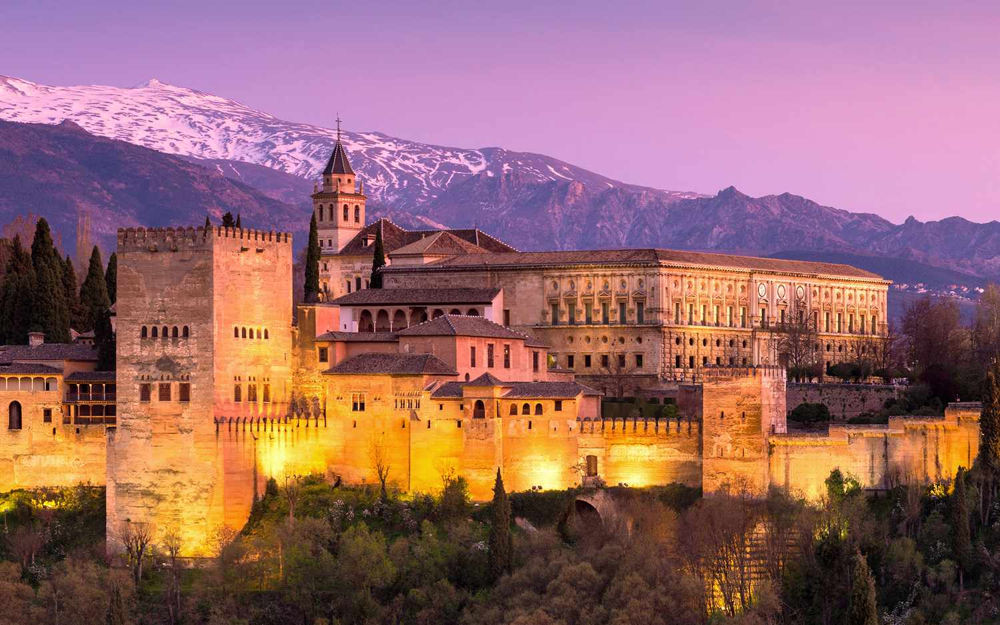
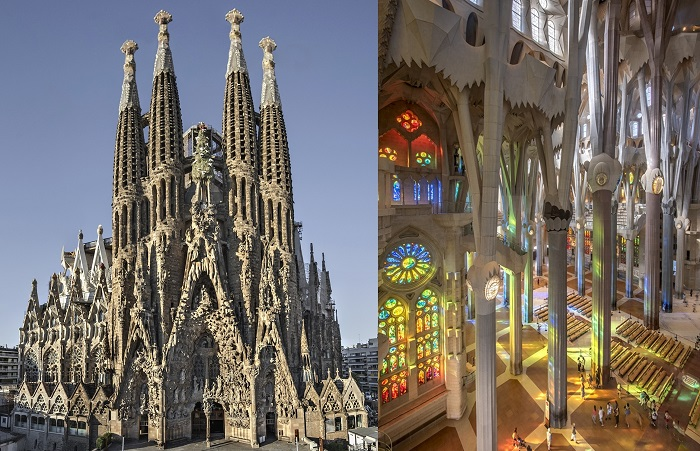

Spain
Spain through the Ages
- Prehistoric & Ancient Spain:Early settlements and Iberian tribes, later influenced by Phoenicians and Greeks.
- Roman Hispania: Spain became part of the Roman Empire, with roads, cities, and Latin culture.
- Muslim Rule (Al-Andalus): Much of Spain was ruled by Muslims, bringing advances in science, architecture, and culture.
- Christian Kingdoms & Reconquista: Christian kingdoms gradually retook the land, ending Muslim rule in 1492.
- Modern Spain: Spain became a global empire, later a modern European country and EU member.
Famous Sights
Roman Aqueduct of Segovia:

This Roman structure was built nearly 2,000 years ago. It is one of the best-preserved Roman monuments in Europe.
Alhambra Palace:

The Alhambra is a famous palace from the Muslim period of Spain. It is known for its beautiful gardens and detailed architecture.
Sagrada Familia:

This is a famous church designed by Antoni Gaudí. It is still under construction and is a symbol of Barcelona.
Spanish food
- Paella: Paella is a traditional rice dish from Valencia. It is made with seafood, meat, or vegetables.
- Tapas: Tapas are small dishes shared with friends. They are very popular in Spanish social life.
- Tortilla Española: : This is a potato and egg omelette. It is simple and very common in Spain.
- Gazpacho: Gazpacho is a cold tomato soup. It is popular in summer, especially in southern Spain.
- Churros: Churros are fried dough sticks often eaten with hot chocolate. They are popular for breakfast or dessert.
Tips for travelers
- Best Time to Visit: Spring and autumn are the best times to visit Spain. The weather is mild and cities are less crowded.
- Meal Times: Spaniards eat lunch and dinner late. Dinner often starts after 9 p.m.
- Transportation: Spain has excellent trains and public transport. High-speed trains connect major cities.
- Money: Credit cards are widely accepted. Carry some cash for small cafés or markets.
- Culture & Respect: Dress appropriately when visiting churches. Saying “Hola” and “Gracias” is always appreciated.